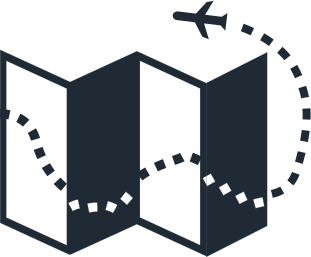

什麼是 WorldWideWork
一邊旅行，一邊環遊世界不再是遙不可及的夢想，事實上已經很多人這麼做！隨著遠距離工作的興起，人們只需一台電腦與網路就能出色得完成工作，於是誕生出了一種名為科技遊民，Digital Nomad，的全新生活型態。
WorldWideWork 是一個專為台灣以及亞洲人量身定做的 Digital Nomad 旅團服務。透過 3 個月到 3 個不同城市，短期且密集的集體遊牧生活，讓不確定怎麼開始的你，或是不知道遊牧生活是否適合的你，用最短的時間與最低的投入成本，親身感受身為科技遊牧民族的生活，享受一次徹底改變自己人生的冒險。

遊牧城市


想像一下
在泰國清邁的 coworking space 和其他來自世界各地的 Nomad 們分享自己環遊世界的經驗與計畫。
在胡志明市的咖啡廳完成設計稿後用一杯充滿奶油香與煉乳的越南咖啡好好犒賞自己。
在峇里島的海灘一邊吹著海風一邊寫扣，並在收工後和其他 Nomads 相約到當地頗富特色的酒吧喝一杯。
這些都可以是你未來的生活日常！
與其盼望下一個假期，倒不如想想如何創造你不需要逃避的生活。
– Seth Godin.
如果你也是
受夠總是加班爆肝卻不知道為了什麼，或是每天朝九晚五，日復一日的無聊生活，覺得是時候重新找回人生的目的與自主權。
或是身體裡住著個自由的靈魂，不嘗試新的冒險就渾身不對勁，無法忍受長時間生活在一成不變的環境裡，認為人生應當充滿更多的可能性。
或是嚮往科技遊民的生活模式，但卻不知從何下手，如何開始，不知去哪裡找 remote job，或是怎麼穩定的接到高品質的案子支持自己的遊牧生活。
又或是覺得科技遊牧民族的生活既新穎又酷，但不確定這種到處游牧的生活型態到底適不適合自己，心裡其實有點既期待又怕受傷害。
別懷疑，WorldWideWork 就是專為這樣的你精心設計的一場冒險！